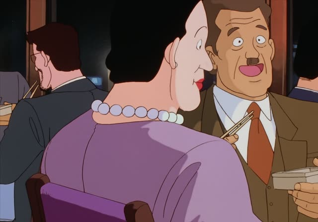
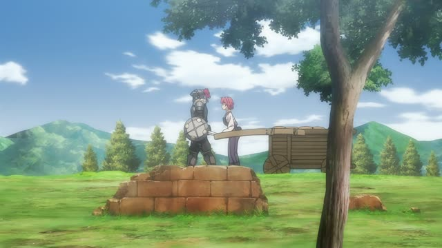
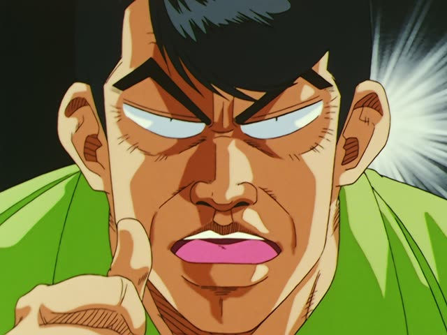
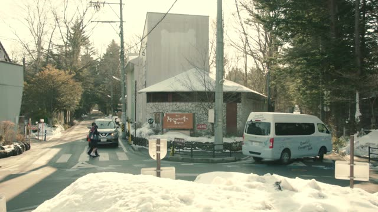

より・～の方が

Shirokuma Cafe · Episode 6
まっ、コーヒーより、ウイスキーのほうが多かったかもな。
"Well, maybe there was more whiskey in it than coffee."
より means than, and の方が marks the one that's more: ウイスキーの方が多い = the whiskey is more.
Put より right after the thing you compare against: コーヒーより (than coffee). On this card, the sentence answers "Which was more?": the whiskey.
Each half works alone too: コーヒーより多い, or ウイスキーの方が多い. 方 is often written ほう. Politeness comes from the end: 多かったです.
Kekkon Dekinai Otoko · Episode 2
あの年より若く見えます。
"He looks younger than his age."
より means "than". On this card, あの年 ("that age") + より + 若く見えます = "looks younger than that age".
Quick Examples
Choosing a drink with a friend.
コーヒーより紅茶の方が好き。
"I like tea more than coffee."
CasualComparing cities with a coworker.
東京は大阪より大きいです。
"Tokyo is bigger than Osaka."
Only より here: Tokyo is already the topic.
PoliteA friend asks: bus or train?
電車の方が早いよ。
"The train's faster."
Only の方が: the other one is clear.
CasualHolding two bags in a shop.
どちらの方が軽いですか。
"Which one is lighter?"
どちらの方が...? = which one is more...?
PoliteWith and without
ウイスキーが多い。
"There's a lot of whiskey." No comparison.
コーヒーよりウイスキーの方が多い。
"There's more whiskey than coffee." Now it's a comparison.
Examples from Media

Shirokuma Cafe · Episode 10
はい、いつもより多めに、ゴロゴロしま～す。
"Okay, I'll laze around more than usual!"
いつもより = than usual.
1 Litre of Tears · Episode 11
私のほうが育てられてるんです。
"Really, I'm the one being raised."
のほうが = "rather me": comparing two people, it's me.

Oishinbo · Episode 10
このほうがさっぱりしててうまいですよ。
"It's lighter and tastier this way."
このほうが = "this way is more...". No の after この.

Goblin Slayer · Episode 2
ふだんより多い。
"More than usual."
ふだん (usual) + より: compared to usual.

Weakest Beast · Episode 3
私より高いよ。
"You're worth more than me."
私 ("me") + より + 高い ("expensive") = "you're worth more than me". Literally "more expensive than me".

Slam Dunk · Episode 63
俺の方が厳しい。
"I'm stricter."
の方が: "the one who is more..."

Daily Lives of High School Boys · Episode 6
あの人は俺よりバカなんだよ。
"She's dumber than me."
俺 ("me") + より + バカ ("stupid") = "dumber than me". なんだよ: explaining, a bit fed up.

Quartet · Episode 7
お前のほうがかわいいよ。
"You're cuter."
Further Reading
A Dictionary of Basic Japanese Grammar
Entry "yori¹" (than) · pp. 564–567
Entry "~hō ga ~yori" · pp. 140–144
Tae Kim's Guide to Japanese Grammar
Using 「方」 and 「より」 · Using 「より」 for comparisons
Using 「方」 and 「より」 · Using 「方」 for comparisons